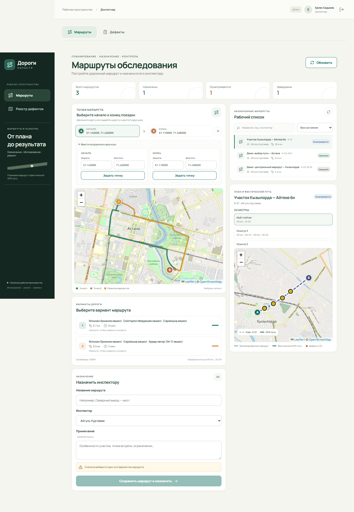
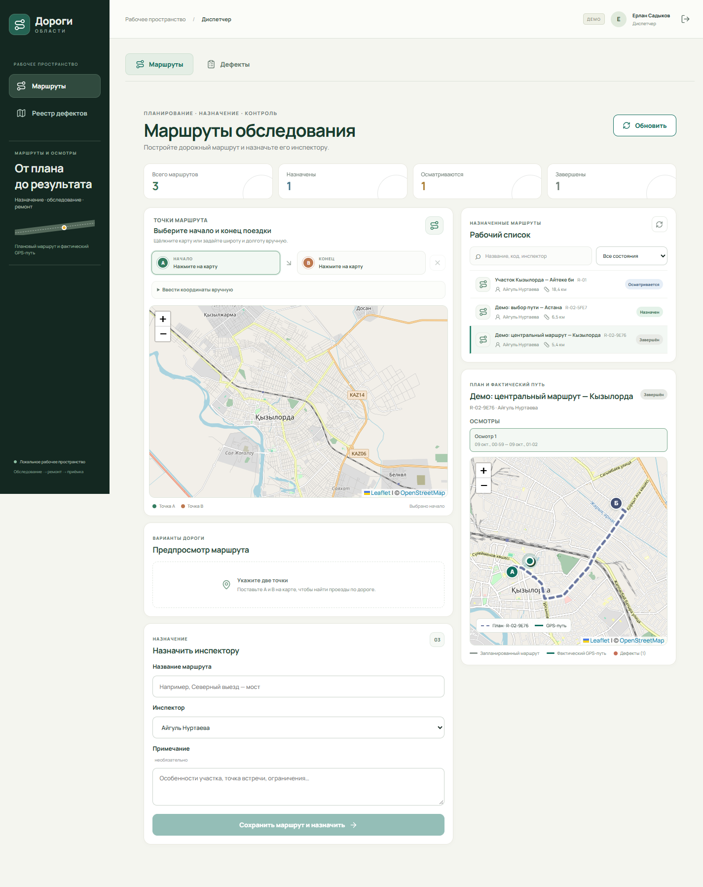
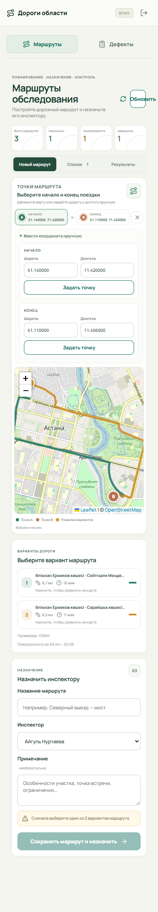
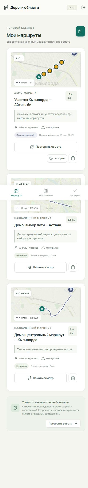
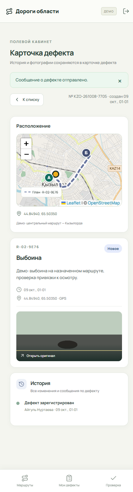

Маршруты обследования
Рабочий интерфейс • ПК и телефон • 9 октября 2026
Диспетчер: альтернативные пути

Диспетчер: результат осмотра

Планирование на телефоне

Маршруты инспектора

Дефект с маршрута
